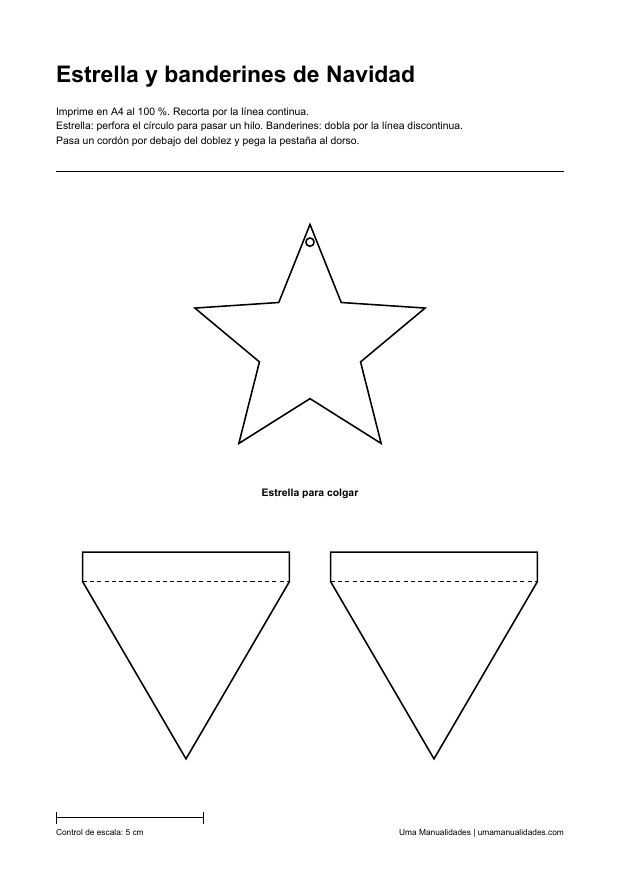
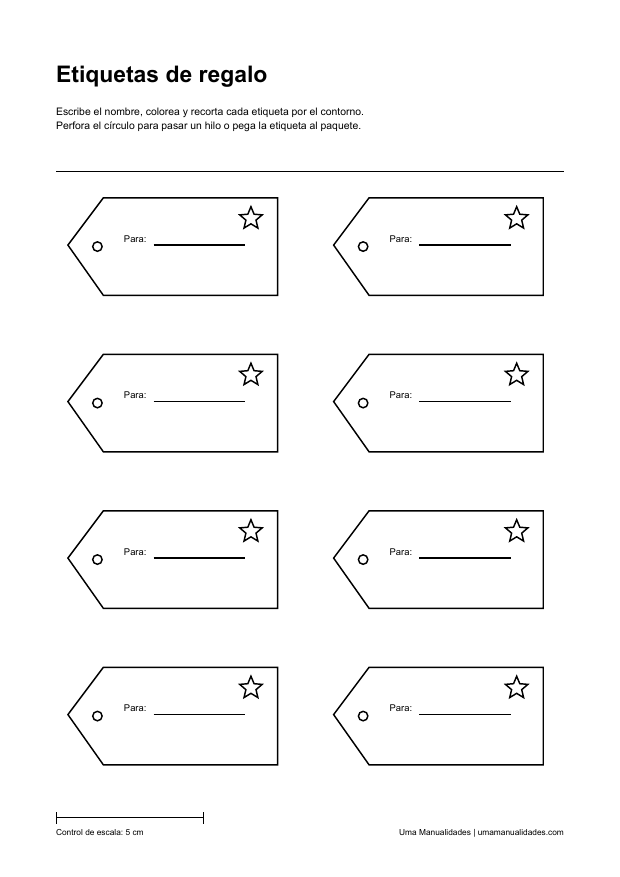

Plantillas de Navidad para imprimir y recortar
Descarga una estrella para colgar, banderines para una guirnalda y ocho etiquetas de regalo. Los moldes están en dos hojas A4 para imprimir en casa.
Descargar plantillas de Navidad (PDF A4)
Vistas previas de las dos hojas


Cómo imprimir y montar los adornos
- Abre el PDF y elige papel A4 y escala 100 % o tamaño real. La línea de control debe medir 5 cm.
- Para colgar la estrella, recorta la silueta, perfora el círculo y pasa un hilo. Si quieres que quede rígida, pega el papel sobre cartulina antes de recortar.
- Para la guirnalda, recorta los banderines y dobla cada pestaña por la línea discontinua. Pon un cordón bajo el pliegue y pega la pestaña por detrás. Imprime más copias para alargarla.
- Escribe los nombres antes de recortar las etiquetas. Pégalas al papel de regalo o añade un cordón por el círculo marcado.
Si preparas la actividad con niños, deja las perforaciones a una persona adulta. Para más proyectos, mira las manualidades de Navidad para niños y las ideas de Navidad con papel.